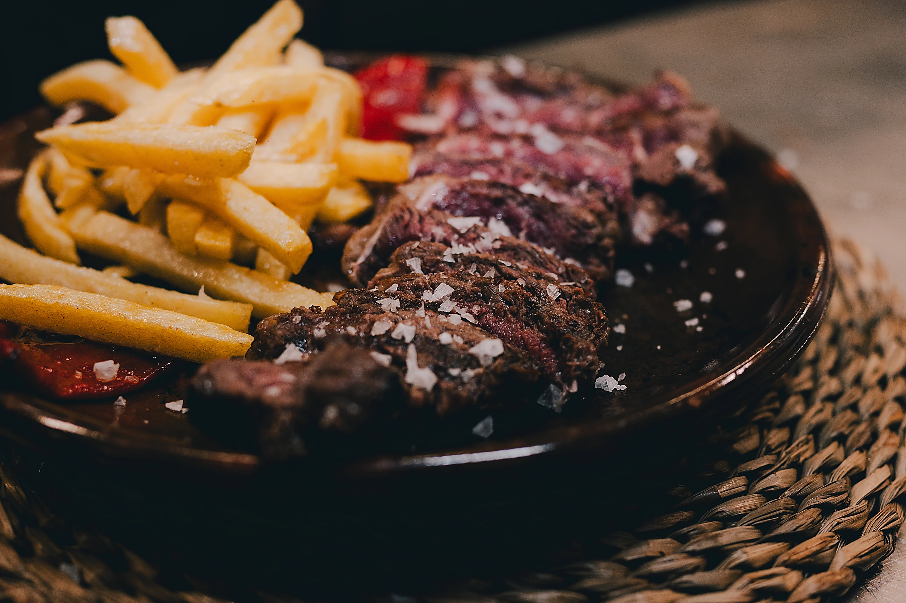
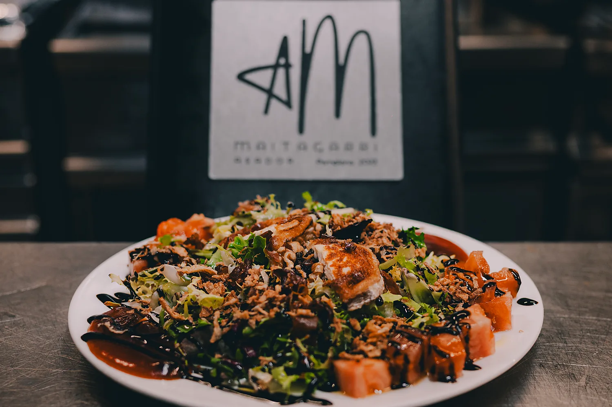
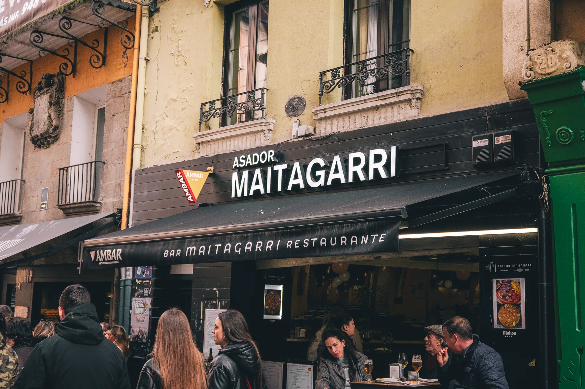

ASADOR · PAMPLONA
ASADOR · PAMPLONA
Maitagarri · Calle Mercaderes, 16
Maitagarri, un asador.
En el Casco Viejo de Pamplona.
Brasa, barra y producto navarro para comer, compartir y volver.
¿Venís en grupo? Conoced la propuesta ↗Desliza para acercarte al fuego
Lo que encontrarás en Maitagarri
Una casa para
comer a tu manera.
Una carta para sentarse, una barra para picar y propuestas para celebrar. Elige lo que necesitas antes de venir.
A la carta
Chuletón, pinchos, cocina navarra, sidrería y bodega. Consulta platos, precios y alérgenos.
Ver la carta ↗02Para celebrar
Navidad, Nochevieja, San Fermín y otras fechas para sentarse sin mirar el reloj.
Ver celebraciones ↗03En grupo
Una cena de empresa con espacio, buena mesa y una propuesta que se adapte a vuestro plan.
Conocer la propuesta ↗Producto sin artificios
Buen producto,
fuego y una cocina que se entiende.
En Maitagarri partimos de cosas sencillas: producto, brasa y platos que apetece compartir. Sin disfrazar lo que funciona.



Maitagarri también se cuenta en imágenes
La ciudad fuera.
El asador dentro.
Un vídeo real de Maitagarri durante San Fermín: la barra, el producto y Pamplona compartiendo el mismo pulso.
Ver la historia completa ↗En Mercaderes · Casco Viejo de Pamplona
Un asador en el centro.
Una mesa para volver.
Maitagarri está en Calle Mercaderes, 16, en pleno Casco Viejo de Pamplona. Puedes venir a comer, tomar algo en la barra o sentarte a compartir la carta.
Lunes a viernes 09:30–23:00
Sábado 10:30–00:00 · Domingo 10:30–23:00
San Fermín · 6–14 julio 2027
Pamplona está de fiesta.
La mesa también.
Durante las fiestas la ciudad cambia de ritmo. Déjanos tu fecha preferida y te avisaremos cuando abramos la agenda de San Fermín 2027.
Reserva tu mesa
Guarda tu mesa.
Lo demás, lo hablamos.
Cuéntanos cuándo quieres venir y cuántos seréis. El equipo de Maitagarri revisará la disponibilidad contigo.